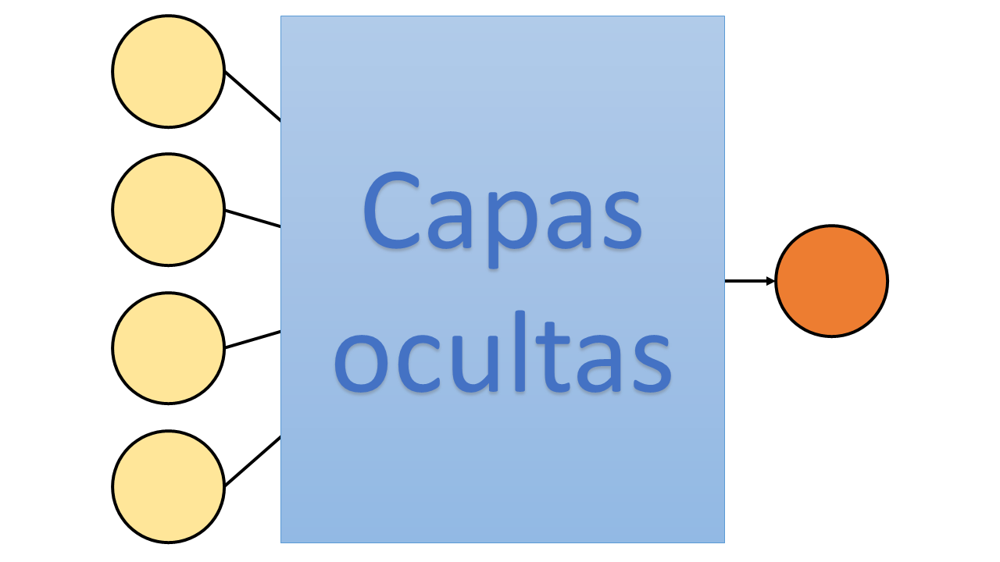

Proyecto Unidad 5: Inteligencia Sanitaria
Al finalizar el proyecto, tu código deberá de lograr crear imágenes que luzcan similares a como lucen las siguientes:


Código Inicial
Descarga los archivos necesarios para comenzar este proyecto.
Descargar archivosInspiración
El mayor temor sobre la actual pandemia del COVID-19 es la imposibilidad de atender a todos los contagiados y que por tanto la tasa de defunción incremente de una forma incontrolable. Sin embargo, hay ocasiones en que un paciente requiere mayores cuidados que otros, el primero tiene un cierto conjunto de características que lo hacen menos propenso a entrar a un estado de gravedad, lo que aumenta de forma considerable la probabilidad de supervivencia a la infección. Sin embargo este conjunto de características no siempre es del todo obvio, ya que las tendencias no parecen siempre apuntar en una única dirección, sino en varias. Por ejemplo: si un paciente de COVID-19 posee diabetes la probabilidad de complicación aumentan de forma considerable, pero si cuenta con hipertensión esa probabilidad de complicación incrementa aún más. La cuestión es, y si, por una desafortunada coincidencia presenta las dos, ¿qué pasa ahora con su situación? ¿La consideramos peor todavía? Ahora bien, qué sucede si ese paciente tiene 20 años, ¿tendrá la misma respuesta que si posee 60?
Esta información, y tal vez más se puede extraer de los datos, la cuestión es cómo. Una respuesta actualmente válida y bastante potente sería construir un modelo de inteligencia artificial que ayude con esta tarea. Bien, eso es lo que vas a hacer en este proyecto.
El área de inteligencia artificial en ciencias de la computación es actualmente algo extremadamente grande. Tanto que no nos será posible darte demasiada información
al respecto. Para que te puedas dar una idea observa la siguiente figura que abarca algunas de las subdivisiones más comúnes de la inteligencia artificial a lo largo del tiempo
tomada del blog de inteligencia artificial de la compañía de tarjetas gráficas NVIDIA

Los algoritmos más conocidos y que actualmente están transformando el mundo son los de Deep Learning, dentro de los cuales se encuentran las redes neuronales profundas (DNN, siglas en inglés de Deep Neural Network). Sin embargo no son las únicas pero sí de las más prometedoras y que mejores resultados han dado actualmente.
Una parte esencial que ha hecho tan poderosas las DNN es la cantidad masiva de datos con los que se cuentan, esto permite ajustar de forma cada vez más fina y precisa estos algoritmos y logren las tareas de forma impresionantemente precisa.
Construir un modelo de Deep Learning, en particular de DNN requiere de cuatro componentes esenciales:
- Datos
- Arquitectura
- Función de pérdida
- Optimizador
Los datos, como ya hemos mencionado, en la mayoría de las ocasiones es necesario que sean masivos. Pero OJO, no siempre más es mejor; hay que encontrar un balance idóneo. La arquitectura podríamos definirla como el algoritmo que vamos a tratar de ajustar para que nos de cada vez mejores resultados. La función de pérdida es la manera en que vamos a evaluar a nuestro algoritmo si lo está haciendo bien o no. Por último tenemos el optimizador, que va a ser ese artefacto especial que nos ayude a modificar el algoritmo dependiendo de su desempeño.
Una parte esencial en Deep Learning es el entrenamiento de la arquitectura o algoritmo. Esto es porque pertenece a la categoría de supervised learning o aprendizaje supervisado. Esto quiere decir que los datos con los que vamos a entrenar tienen una clasificación. Por ejemplo, si vamos a entrenar en un conjunto de imágenes, cada imagen utilizada para entrenar debe de tener su correpsondiente descripción de lo que se espera que responda el modelo, por ejemplo si se le pasa la foto de un gato, también se le debe de indicar al modelo que esa foto pertenece a un gato, de forma que pueda ir encontrando caracaterísticas entre todas las fotos de gatos y posteriormente sea capaz de reconocer uno sin haberlo visto antes.
Este es el principio de las DNN, entrenas el modelo con datos etiquetados con sus respectivas respuestas varias veces con la intención de que aprenda a identificar características que lo hacen único y se repitan en otros casos que nunca ha visto.
Una ejemplificación gráfica sobre cómo luce una DNN es la siguiente
 donde los nodos indicados con el número 1 y en color amarillo hacen referencia a las entradas (cantidad de información que se le va a pasar al modelo para hacer su predicción). Posteriormente están las de color azul marcadas con el número 2,
éstas son actualmente las capas ocultas, en cada una de ellas llegan los datos y se les aplican funciones no lineales (usualmente llamadas funciones de activación) que transforman los datos de forma que el algoritmo los pueda analizar
e interpretar. Finalmente los nodos con número 3 en color naranja son las salidas del modelo, las predicciones que llevó a cabo. Cada uno de estos niveles marcados con un número de salida se conoce como capas. Las DNN tienen una capa de entrada y una de salida
pero pueden tener tantas capas intermedias (ocultas) como se requiera y desee.
donde los nodos indicados con el número 1 y en color amarillo hacen referencia a las entradas (cantidad de información que se le va a pasar al modelo para hacer su predicción). Posteriormente están las de color azul marcadas con el número 2,
éstas son actualmente las capas ocultas, en cada una de ellas llegan los datos y se les aplican funciones no lineales (usualmente llamadas funciones de activación) que transforman los datos de forma que el algoritmo los pueda analizar
e interpretar. Finalmente los nodos con número 3 en color naranja son las salidas del modelo, las predicciones que llevó a cabo. Cada uno de estos niveles marcados con un número de salida se conoce como capas. Las DNN tienen una capa de entrada y una de salida
pero pueden tener tantas capas intermedias (ocultas) como se requiera y desee.
Pongamos un ejemplo, queremos entrenar un modelo que nos ayude a calcular el valor de una casa. Para ello vamos a tener que darle información sobre la casa, datos como:
- Metros cuadrados de construcción
- Ubicación
- Número de recámaras
- Número de baños
Podríamos poner muchas más características, pero para fines explicativos esas cuatro son suficientes. Ahora bien, dada la información y el problema, una parte de nuestra arquitectura ya debe de estar definida, en particular la capa de entrada y la de salida.
Para nuestra capa de entrada es evidente que vamos a necesitar cuatro nodos ya que vamos a pasarle al modelo cuatro datos por casa. Mientras que, como únicamente buscamos que calcule el precio, nuestra capa de salida será de únicamente un nodo, el cual esperamos sea el precio predicho por el modelo. Con esta información nuestra arquitectura quedaría similar a lo siguiente
donde cada uno de los nodos amarillos será uno de los cuatro datos de información sobre las casa (metros cuadrados, ubicación, etc.), y el nodo naranja representa la única salida que tendrá el modelo, que será la predicción del precio de la casa. Toda la sección intermedia podrá tener tantas capas y nodos como uno desee, no hay restricción para ello.
Una vez construida la arquitectura de la red y contando con los datos, se construye la función de pérdida y se selecciona un optimizador, el paso siguiente será el entrenamiento y la evaluación del modelo.
La forma más usual de evaluar y entrenar es a través de crear dos sets de datos, dividiendo el conjunto total de datos en dos partes:
- Datos de entrenamiento (set de train)
- Datos de prueba (set de test)
Las proporciones que estos deben de tener son también arbitrarias, y generalmente se hacen varias pruebas para encontrar la mejor combinación. Los datos de train se ocupan para entrenar la red y tratar de que ajuste estos datos de la mejor manera, estos datos pasan varias veces por el modelo, buscando que con cada ocasión que pasan mejore la predicción. A este número de ocasiones que se entrena la red se conoce como épocas (epochs en inglés).
El set de test sirve para evaluar la capacidad de la red de generalizar el fenómeno para el que se entrenó. Esto quiere decir que, después de haber entrenado la red todas las épocas, se hacen las predicciones sobre los datos de test, los resultados nos dirán qué tan buen rendimiento tiene el modelo en datos que jamás había visto (i.e. no fue entrenado con ellos). Este resultado es de suma importancia ya que nos indica si la red realmente aprendió o no.
Proyecto
Para este proyecto desarrollarás un modelo de DNN que ayude a predecir la posbilidad de supervivencia de un infectado por COVID-19 en México. Para ello hemos construido un dataset con información brindada por el Gobierno de México donde se describen algunas características de cada uno de los pacientes en nuestro país.
Utilizando estos datos construirás y entrenarás un modelo de Deep Learning que tome todos los datos del paciente y como resultado dé una probabilida de supervivivencia del paciente. Esto quiere decir que tu red deberá de contar con el mismo número de características del paciente que nodos de entrada, y también contará con un único nodo de salida, el cual deberá de tener un valor entre 0 y 1.
Este modelo podrá ayudar por ejemplo para identificar los casos de mayor riesgo y que el servicio de salud preste una atrnción preventiva efectiva que logre reducir lo más posible las complicaciones del paciente.
Ayudas
Para este proyecto en la carpeta comprimida (.zip) que descargaste al principio de la página contiene dos archivos, uno de datos y un script donde harás tu proyecto.
COVID19MEXICOsmall.csv
Este archivo csv contiene algunos de los datos de casos de COVID-19 en México. Cuenta con las siguientes columnas para cada paciente:
SEXO1 si es mujer, 2 si es hombre.ENTIDAD_REScontiene el código con el que se identifica el estado donde vive.TIPO_PACIENTE1 si es ambulatorio o 2 si está hospitalizado.INTUBADO1 si está intubado, 0 si no lo está.NEUMONIA1 si padece neumonia, 0 si no.EDADedad al momento del contagio en añosDIABETES1 si padece diabetes, 0 de lo contrario.EPOC1 si padece epoc, 0 si no.ASMA1 si padece asma, 0 si no.INMUNOSUPR1 si padece de inmunosupersión, 0 si no.HIPERTENSION1 si padece hipertensión, 0 si no.OTRA_COM1 si padece de alguna otra complicación que no haya sido mencionada, de lo contario 0.CARDIOVASCULAR1 si padece alguna afectación cardiovascular además de la hipertensión, 0 si no.OBESIDAD1 si padece de obesidad, 0 si no.RENAL_CRONICA1 si padece alguna enfermdad renal crónica, 0 si no.TABQUISMO1 si padece tabaquismo, 0 si no.UCI1 si estuvo internado en la Unidad de Cuidados Intensivos, 0 si no.DEF1 si el paciente falleció, 0 si superó la infección.
De las columnas anteriores, nuestro modelo tomará como entradas todas las columnas excpeto DEF, la cual será nuestra variable a predecir. De forma que nuestro modelo tendrá como entrada
17 datos de cada paciente, y tendrá que buscar predecir la probabiliad de superar la infección.
InteligenciaSanitaria.py
este código será el principal para el proyecto. En él haremos toda la implementación de una DNN. Podemos dividir dicha implementación en cuatro grandes secciones:
Preparación de datos
En esta sección se hace la lectura y preparación de los datos para ser utilizados. La lectura se hace desde el archivo csv que se guarda en un DataFrame de pandas.
Una vez que tenemos nuestros datos cargados, los dividimos en set de train y set de test. Hemos hecho esta división 70% train, 30% test; pero puedes cambiarlo cuando gustes. Ya que están dividos los datos
los separamos en dos conjuntos (tensores, que son las estructuras de datos con las que trabaja PyTorch) cada set. El denominado entradasTrain contendrá las 17 columnas que utilizaremos como entradas para la red,
mientras que en el tensor objetivoTrain que contendrá las respuestas esperadas por parte de la red y que corresponden con la columna DEF de los datos. Caso similar se aplica para los daotos del
set de test en los tensores entradasTest y objetivoTest, para las entradas y sus respectivos objetivos respectivamente.
Eso es todo para la preparación de datos. Con eso terminamos con cuatro tensores, dos de ellos del set de train y los otros dos del set de test. Los primeros los utilizaremos para entrenar nuestra red, los segundos para evaluarla.
Definición del modelo
Esta sección tiene la definición de la arquitectura, de la función de pérdida y del optimizador.
Para el caso de la arquitectura, la forma de hacerlo es definiendo una clase derivada del módulo de PyTorch; o en otras palabras, creamos una red como si fuera una función, pero que puede tener funciones en ella también.
Hemos hecho para ti la estructura básica de la clase, y luce algo como lo siguiente:
class Red(nn.Module):
def __init__(self):
super(Red, self).__init__()
TODO
self.sigmoid = nn.Sigmoid()
def forward(self, x):
# TODO
La definición de la función cambió ligeramente y ahora es class Red(nn.Module), donde en lugar de ser una función definimos una clase, por eso la palabra reservada class.
Lo demás es como ya lo conocías, el nombre de la clase es Red, y va a ocupar el módulo nn.Module de PyTorch.
Después vienen dos funciones dentro de la clase. __init__ es aquella donde se inicializa la clase. Específicamente, donde se deberá de especificar qué herramientas se van a ocupar en el modelo. Por ejemplo,
ya hemos definido la función self.sigmoid que va a tener el comportamiento de nn.Sigmoid() de PyTorch, pero dentro de nuestro modelo. Esta función es la
función de activación sigmoide que la ocupamos para obtener valores entre 0 y 1. En esta función __init__ se
definen tanto funciones de activación como las capas que se van a ocupar en el modelo. Por ejemplo si quisiéramos cear una capa que entren 5 datos y salgan 3 crearíamos la siguiente función self.capa1 = nn.Linear(5, 3).
Presta especial atención que la palabra self se repite en todas las definiciones, esto es porque cuando trabajamos con clases y algo que se llama programación orientada a objetos
esto hace refencia a que es un elemento de esa clase, como si le perteneciera. Igualmenente cuando quieras utilizar alguna de esas funciones deberás de ocupar self para indicar que intentas utilizar lo que está contenido en esa clase.
La siguiente función es forward que es aquella que indicará realmente la arquitectura, la forma de procesar los datos de la red. La declaración de la función luce de la forma def forwad(self, x), donde podemos prestar
atención a lor argumentos que toma esta función. El primero es simplemente por convención y requerimiento de python que se agregue self, por lo que el importante será x. Este argumento x es el que
contiene los datos de entrada de la red. Esto quiere decir que, cuando ingrean los datos a nuestro modelo, entrar en esa variable x, por tanto será aquella a la que buscamos pasarla por nuestra red. En pocas palabras, x
son los datos, lo que le hagamos en la función forward será la arquitectura de nuestra red.
Hemos colocado una pequeña ayuda para tí en esta función con la línea return self.sigmoid(x). Esta línea de código lo que hace es indicar que a la última capa de nuestra red, antes de convertirla en nuestra capa de salida, le vamos a aplicar la función sigmoide. Esto
ya que esperamos que nuestro resultado se encuentre entre los valores 0 y 1. Así como aplicamos nuestra función de activación a x, puedes aplicarle también capas con una sintaxis similar. Por ejemplo, si retomamos self.capa1 = nn.Linear(5, 3) antes descrita,
para aplicarla a nuestro datos simplemente tendríamos que colocar self.capa1(x) en la función forward y con eso se aplicaría la capa a los datos en x. Es importante que tomes en cuenta las dimensiones de tus capas,
si tu capa tiene de entrada 5 nodos, esperas que el tamaño de tus datos en x sea también de 5, y por ejemplo, al tener una salida de 3, es indispensable que la siguiente capa comience con 3 nodos, de lo contrario tendrás problemas. ¿Ya encontraste el patrón? Con lo que acaba una capa,
forzosamente debe de comenzar la siguiente, así hasta llegar a la capa de salida.
Bien, verás que en ambas funciones hemos colocado # TODO. Estas secciones serán las que tengas que completar para crear tu primer modelo de DNN. Toma en consideración los consejos que te damos en el párrafo anterior, ya que te serán de mucha ayuda para lograrlo.
Un último recordatorio antes de que comiences a diseñar tu red: tenemos 17 datos de entrada, y esperamos uno de salida, antes de aplicarle la función sigmoide.
Luego de completar la definición de la clase Red, creamos una variable de ese tipo, que hemos llamado red por simplicidad. Pero no te confundas, Red con mayúscula es la clase, como si fuera una plantilla de la cual puedes copiar tantas veces quieras
la arquitectura que craste. Mientras que red con minúscula es una copia de la plantilla; pero es esa la que vamos a entrenar.
Hemos tomado la función más usual y sencilla para modelos de DNN conocida como MSE (error cuadrático medio en español), la cual mide la distancia euclidiana entre los puntos objetivo y las predicciones de la red.
También hemos definido para ti el optimizador que vamos a ocupar. Igualmente el SGD es el más básico y más conocido de todos, por ello lo hemos ocupado, pero si te sientes con seguridad puedes intentar cambiarlo,
aquí hay una lista con todos los optimizadores con los que cuenta PyTorch. Notarás que este optimizador toma dos argumentos red.parameters() que son el conjutno de parámetros (lo que se va a ajustar) del modelo,
y también con un lr que el el conocido como learning rate, con el que también puedes sentirte libre de jugar con sus valores, de hecho esta es una de las prácticas más comúnes en Deep Learning, ya que es una forma de encontrar
el óptimo para tu modelo.
Entrenamiento del modelo
Para entrenar la red definimos el número de épocas en la variable epochs que es el número de veces que se repite el ciclo de entrenamiento. En este ciclo suceden varias cosas importantes:
- Se establecen los gradientes a cero.
- Se evalúa la predicción del modelo en
redsobre las entradas del set de train. - Se calcula la función de pérdida (error) entre la predicción de la red y los objetivos reales del set de train.
- Se actualizan los parámetros de la red según la pérdida, el gradiente y el optimizador.
Como extra agregamos un código que creará un gráfico en la primera y la última época, donde muestre el estado de las predicciones de la red a través de un boxplot.
Evaluación del modelo
Una vez que se acabó de entrenar el modelo, podemos pasar a evaluarlo. Para esto seguimos un proceso similar al de entrenamiento, pero en esta ocasión no buscamos que se
actualicen los parámetros, de forma que lo hacemos dentro del comando with torch.no_grad() que justamente impide que se actualicen los gradientes en el cálculo
de las predicciones.
Para evaluar calculamos la predicción de la red, pero ahora sobre las entradas del set de test. Una vez que las tenemos, podemos comparar y graficar las predicciones de la red y los objetivos reales. Si el rendimiento es el esperado, ¡hemos entrenado bien la red! De lo contrario tal vez sería buena idea comenzar a modificar parámetros.
Especificación
Para llevar a cabo este proyecto deberás de completar las funciones __init__ y forward de InteligenciaSanitaria.py.
Para lograrlo recuerda que, en la función __init__ definirás tanto las funciones como las capas que ocupará tu modelo, aquí no importa el orden en que las definas.
En forward implementarás la estructura de las capas y funciones de activación de la red, mismas que tuviste que haber definido previamente en la función __init__.
Aquí sí es muy importante el orden, ya que este definirá qué operaciones se aplican primero y cuáles después. Recuerda que al final ocupamos la variable x para la función sigmoide, por lo que en cada operación
que le apliques debes de ir actualizándola.
Como recomendación, podrías comenzar con una arquitectura sencilla, esto quiere decir con una única capa oculta. En otras palabras, tendras 17 nodos de entrada que pasarían a un valor z que tú decidas de nodos, los cuales en la siguiente capa se reducirían a uno, que sería la última capa antes de aplicarle la función sigmoide. De preferencia aplícale una función de activación a los resultados de cada una de las capas, esto mejora de gran manera la capacida de predicción de la red. Aquí puedes encontrar algunas ya implementadas en PyTorch.
Una vez que hayas completado ambas funciones, habrás completado tu implementación y tendrás todo listo para seguir avanzando en el código e implementar tu modelo.
Walkthrough
Resultados esperados
Cuando tengas listas ambas funciones en la clase Red podrás seguir avanzando en el código y comenzar a entrenar ¡tu primer modelo de Deep Learning en Python!
Al finalizar el entrenamiento se desplegrán los boxplots que hemos implementado para visualizar el rendimiento del modelo. Cuando creas que tu red ha hecho un buen trabajo en su entrenamiento, ponla a prueba
en la sección de evaluación.
Sigue jugando y modificando los parámetros, la arquitectura, la función de pérdida, el optimizadora, todo. Mientras más modifiques más aprendes.
Bien, recuerda que estos fueron los resultados tomando únicamente una porción de todos los datos que hay sobre la actual pandemia. Si quieres poner a prueba la capacidad de tu modelo de mejor manera, puedes descargar todos los datos disponibles aquí
Descargar todos los datos (150MB)
O si lo prefieres puedes encontrar esos mismo datos en el COMPLETAR AQUÍsiguiente dataset de Kaggle que contiene los mismos datos. Si no ocupaste Kaggle anteriormente, tal vez
sea una buena opción probarlo. Puedes encontrar más información al respecto en la sección de recursos adicionales donde viene cómo crear un notebook en la nube y cómo agregar datos
en él.
¡Felicidades! Completaste este proyecto, tu útlimo proyecto, con éxito. Esperamos que haya sido de tu agrado y hayas aprendido mucho. Si tienes cualquier duda o comentario no dudes en contactarnos en la sección Sobre este curso.
¡Éxito y feliz programación!